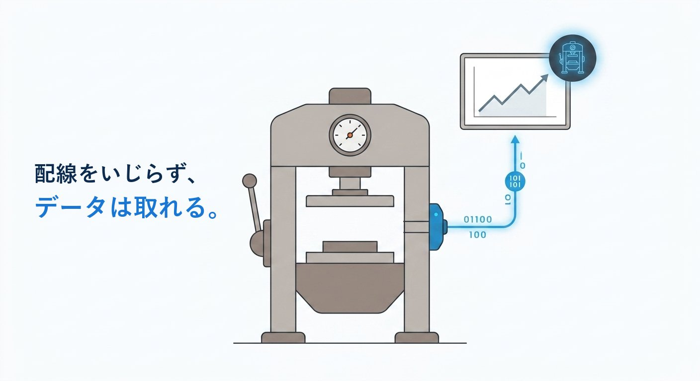
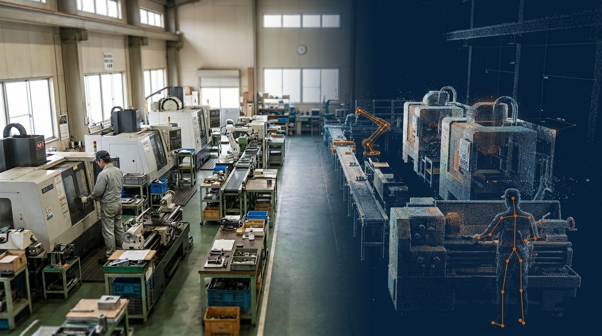
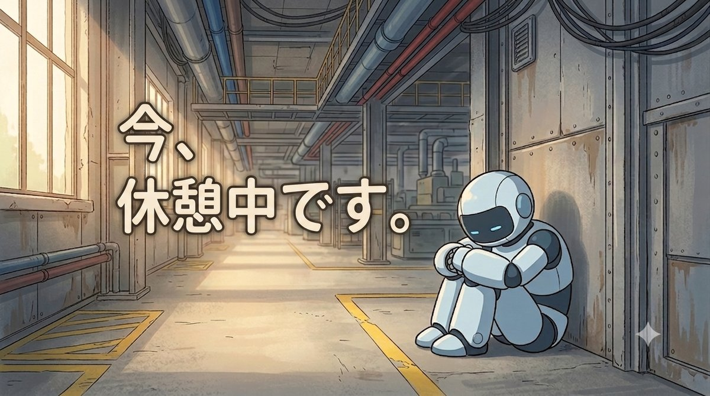

デジタルツイン・自動化・現場改善に関する情報をお届けします。

2026.09.06
通信機能もセンサーもない古い設備でも、配線を一切いじらずにデータは取れます。 電流・振動・信号灯という3つの入口と、専用機器と自作マイコンそれぞれの現実的な始め方を解説します。
続きを読む ›
2026.08.27
ダイキン工業・日立製作所・旭化成のデジタルツイン活用事例から、中小製造業が取り入れられる考え方を整理します。 多品種少量生産の工場でも、成果は出せます。
続きを読む ›
2026.08.13
カタログ注文型と一般型の違いを整理し、「自社の現場のどこが対象になりそうか」という技術的な視点から 判断のヒントをお伝えします。対象になりやすい現場の特徴も解説します。
続きを読む ›
2026.08.10
搬送作業を産業用ロボットで省人化する場合の費用感を、実際の項目ごとに解説します。 ロボット本体は全体のおよそ3割にすぎず、残り7割は制御盤・カメラ・安全対策・工事・設計などの周辺費用です。
続きを読む ›
2026.07.21
デジタルツインの価値は「見える化」だけではありません。データを蓄積し続けることで、工場は異常の原因を突き止め、 未来を予測し、次に何をすべきかまで提案してくれるようになります。その仕組みと考え方を解説します。
続きを読む ›
2026.07.18
ロボットによる自動化には「向いている現場の条件」があり、多くの現場ではその条件を満たせません。 人を減らす省人化ではなく、今いる人の負担を軽くする省力化という考え方と、その第一歩となる「作業の洗い出し」について解説します。
続きを読む ›
2026.07.13
デジタルツインの導入率は中小企業でわずか3%。壁になっているのは技術ではなく「最初の一歩」の分かりにくさです。 iPhoneのLiDARを使った低コスト3Dスキャンから、IoTセンサーによる予知保全まで、現実的な始め方をまとめました。
続きを読む ›